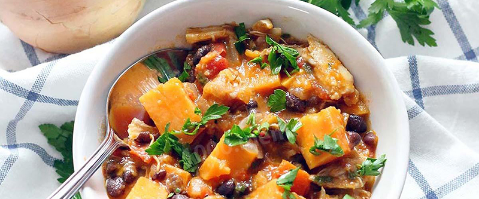

Батат с кинзой

4 батата поставить на паровую баню до готовности (около 13 минут).
В это время на оливковом масле поджарить 1 мелко порезанную луковицу до мягкости, добавить 1-2 головки чеснока и обжарить 1-2 минуты. Добавить 3 мелкопорезанных помидора и 0,5 ч.л. имбиря, добавить соль и перец и потушить до готовности.
Смешать овощи на сковороде с бататом и кинзой.